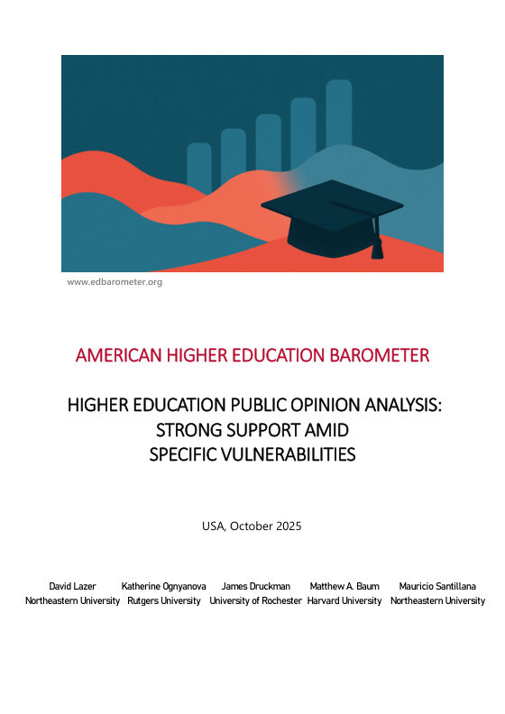

New report · October 2025
Measuring American Attitudes Towards Higher Education
A national survey of 31,891 adults across all 50 states and the District of Columbia on how Americans value, trust, and worry about colleges and universities.
Key Insights
A majority of the American public recognizes the value of universities and opposes federal funding cuts. However, they also express concern about campus issues, including costs and free speech. Communications can emphasize higher education’s highly valued contributions while distinctly acknowledging strategies to address concerns.
- 90% say universities are important for science
- 70% oppose federal cuts to health research funding
- 59% approve of universities in the United States
- 87% are concerned about tuition costs and student debt
National sample, N = 31,891, fielded July 3 – August 1, 2025.
Latest Report

Report 01 · October 2025
Higher Education Public Opinion Analysis: Strong Support Amid Specific Vulnerabilities
Our first report examines public attitudes towards colleges and universities in the United States. We find that higher education enjoys broad public support, but this strength is tempered by serious vulnerabilities. Most Americans recognize universities as vital for science (90%), technology (91%), healthcare (83%), and economic growth (83%). Moreover, 72% see them as important for democracy, and majorities across parties value local contributions in health and the economy. This translates into strong opposition to federal funding cuts in science, health, and education, with disapproval ratios of roughly 4 or 5 to 1.
At the same time, the public expresses concern about issues shaping campus life, from tuition and debt (87%) to discrimination, campus free speech, and liberal bias. Even with those vulnerabilities, 59% of Americans overall approve of universities and 75% trust them at least somewhat.
Inside the report
- Higher education is seen as crucial across key domains
- There is strong support for funding scientific and medical research
- There is strong opposition to government policies
- Higher education faces significant vulnerabilities with respect to campus climate
- There is relatively strong overall approval of higher education
- Trust in colleges and universities is high, especially relative to other institutions
About the Survey
The American Higher Education Barometer (AHEB) measures how Americans see colleges and universities: what they value, what concerns them, and how much they trust them.
Between July 3, 2025, and August 1, 2025, we collected a total of 31,891 responses from individuals age 18 and older across all 50 states plus the District of Columbia. The surveys were conducted by PureSpectrum via an online, nonprobability sample, with state-level representative quotas for race/ethnicity, age, and gender. In addition to balancing on these dimensions, we reweighted our data using demographic characteristics to match the U.S. population with respect to 2020 vote choice and turnout, race/ethnicity, age, gender, education, and living in urban, suburban, or rural areas.
- Respondents
- 31,891 adults
- Coverage
- All 50 states and DC
- Fielded
- July 3 – August 1, 2025
- Sample
- Online, weighted to U.S. adults